Classificação: Excelente (nota >= 4,5)
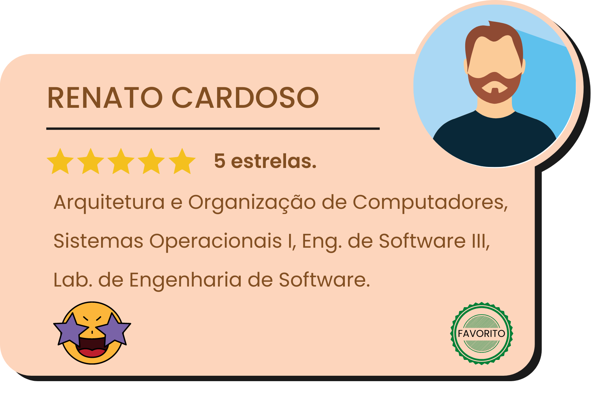 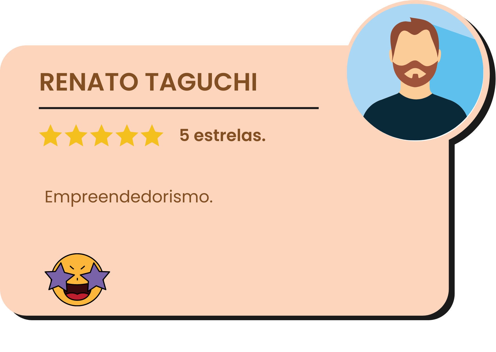 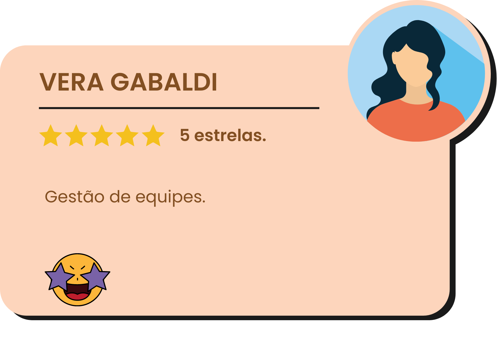 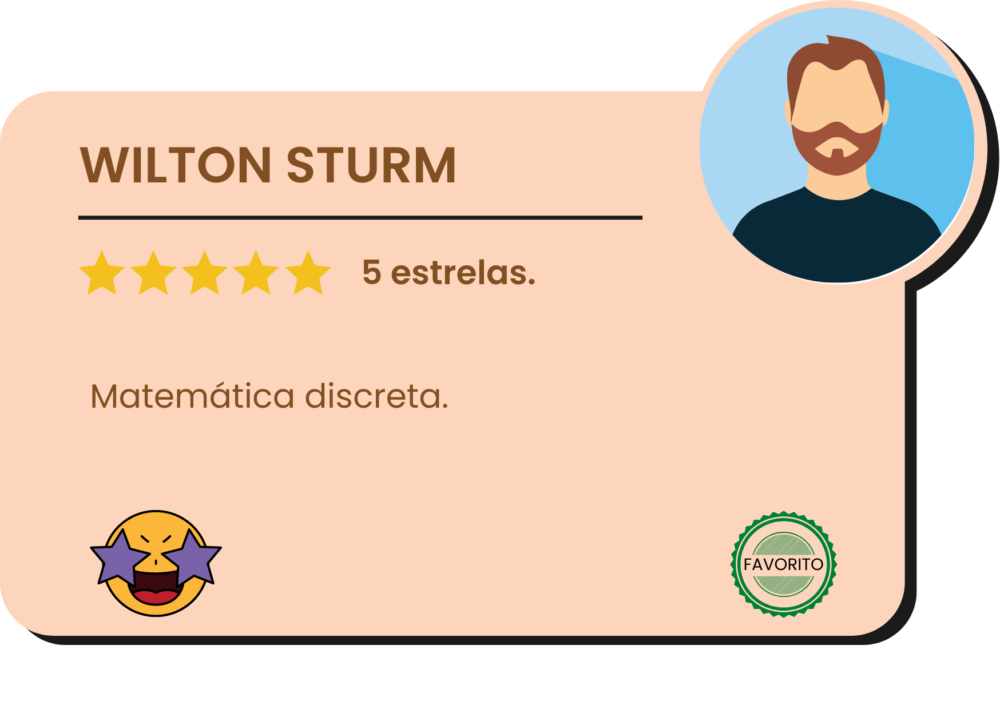 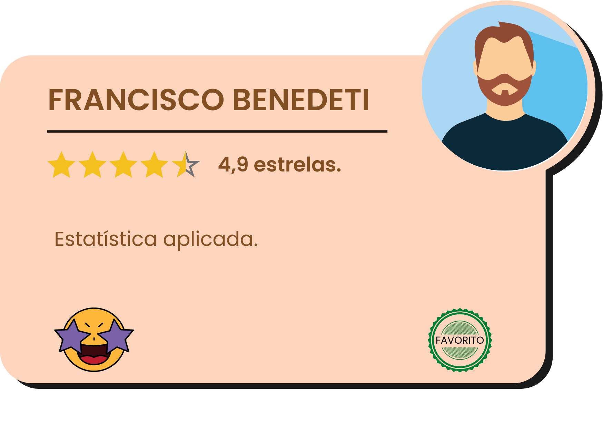 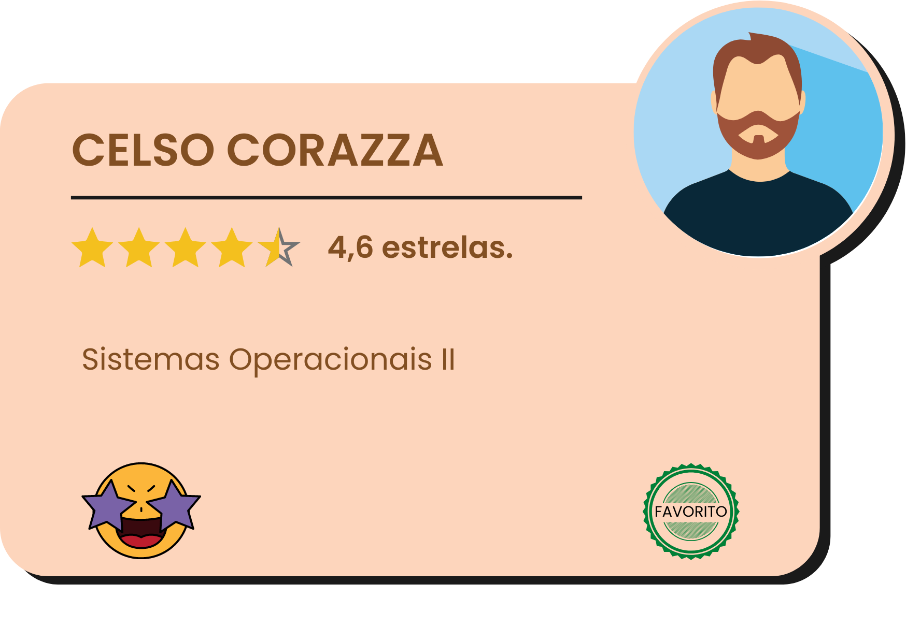 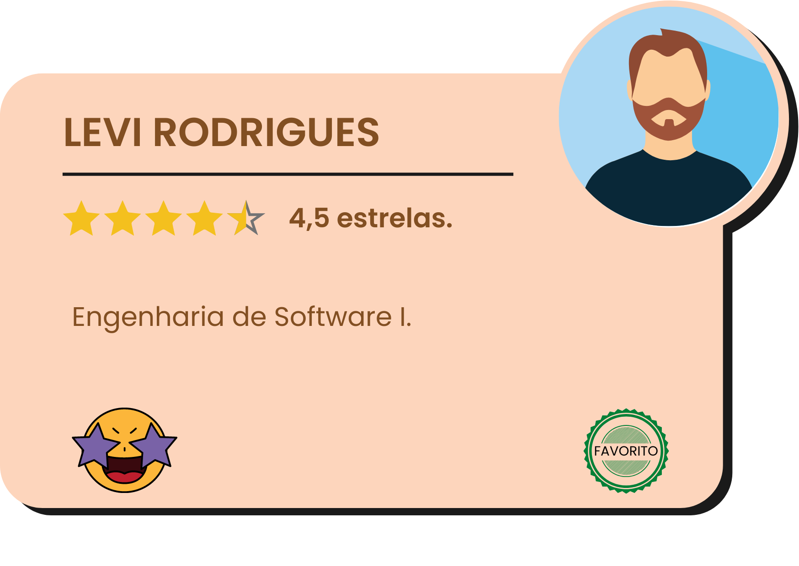Classificação: Acima da média (4 <= nota <4,5)
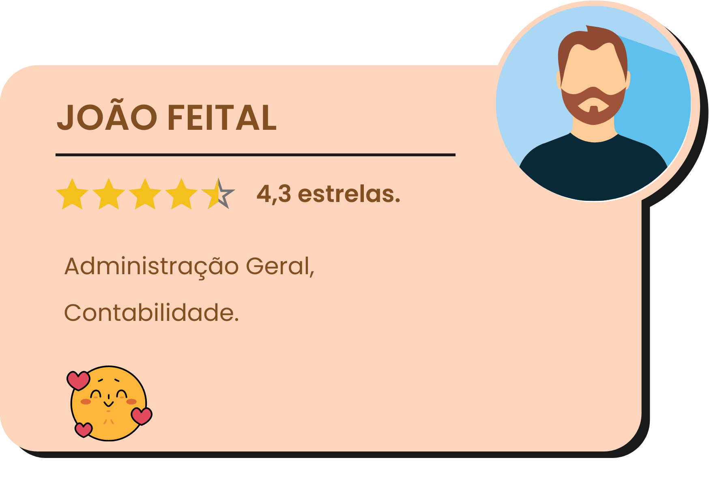 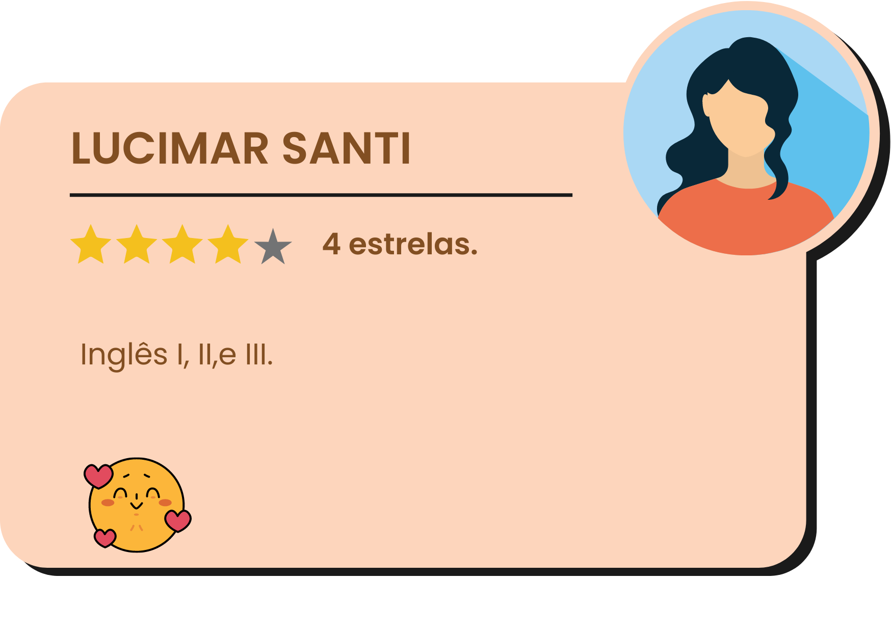
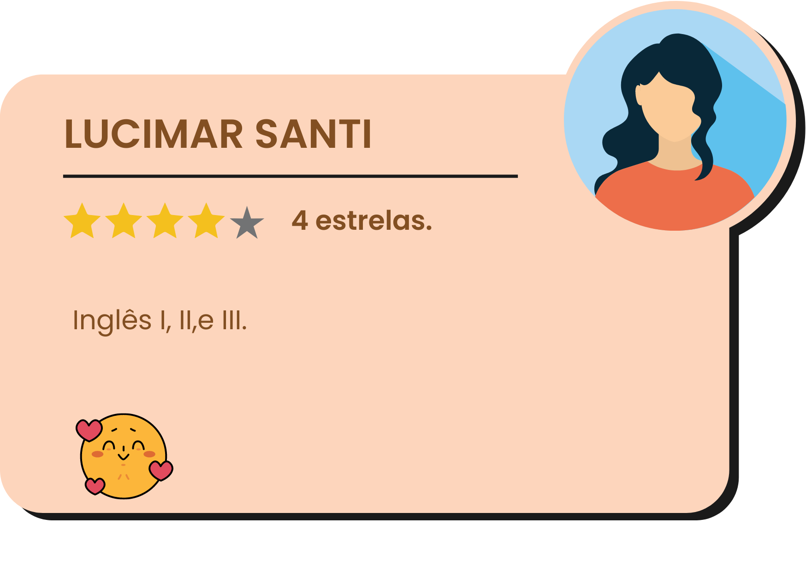
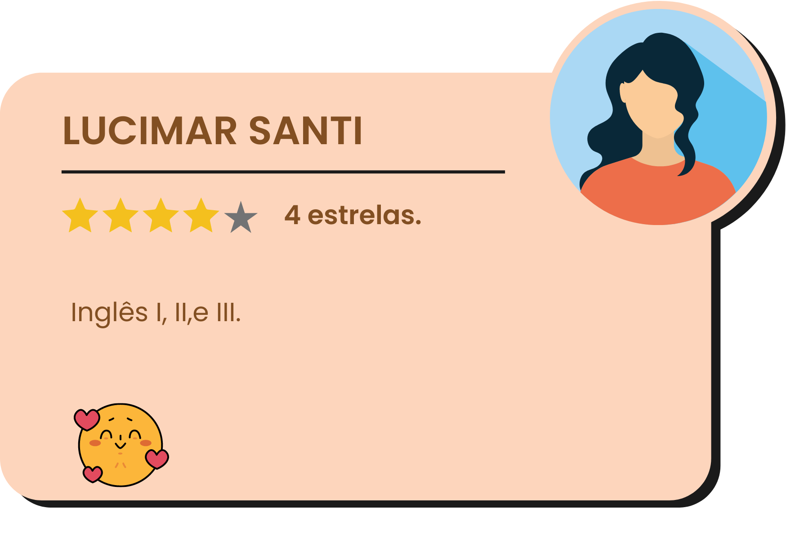
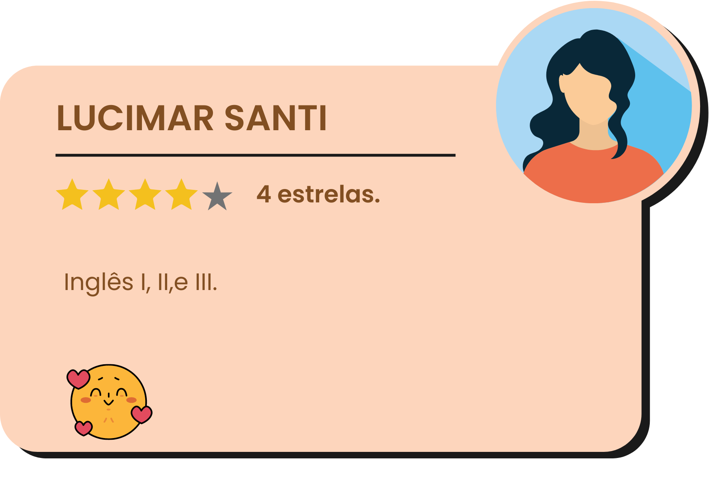
🡆"MATEMÁTICA DISCRETA (Wilton Sturm) - Só tenho elogios a fazer sobre o professor. Sempre gostei muito de matemática, mas tive o infortúnio de me deparar com professores ruins a partir do nono ano. Acreditei, sinceramente, que era burra e meu amor pela matemática era impossível. Em seis meses de aula o professor Wilton me ensinou muito mais do que consegui aprender durante todo o período do ensino médio no qual foram ministrados os conteúdos que a disciplina de Matemática Discreta aborda. Minha esperança de me dar bem com a matemática retornou de tal maneira que penso agora em cursar matemática depois de terminar o curso de ADS. Muito obrigada, professor :')"
🡆"Prof. Wilton é muito bom, me fez gostar de matemática pela primeira vez na vida (fiquei encantada com os conteúdos que ele passou, a didática faz com que o aluno se interesse muito)."
🡆"Francisco C. Benedeti (Disciplina - Estatística Aplicada) - SE EU PUDESSE DAVA 1000 ESTRELAS! É estatisticamente provado que é impossível sair triste da aula do Chicão. Professor não só divertido como também extremamente competente!"
🡆"Estatística com Chico: Didática excelente e ótima convivência com os alunos."
🡆"Sistemas de Informação (Bianchi) - Professor incrível. Uma fonte maravilhosa de conhecimento. Minhas aulas preferidas no primeiro semestre. Fez-me perceber que escolhi o curso certo."
🡆"Professor Renato é extremamente competente, além de ter uma didática invejável."
🡆"SO II com Celso: Aulas são mão na massa, ajuda todos os alunos assim que pode, didática boa."
🡆"Celso Corazza (Sistemas Operacionais 2) - Professor incrível, competente, TOP!!"
🡆"Elogios para as aulas de Laboratorio de Banco de dados, Engenharia de software 3 e POO que nos fizeram fazer aplicações que estão mais de acordo com a nossa realidade."
🡆"Os professores Xico de Estatística, Ricardo de IHC e Celso de S.O. II são excelentes e as aulas muito boas, aprendi muito bem o conteúdo. ótima explicação na matéria de tópicos especiais.""
🡆"Levi Rodrigues Junior (Engenharia de Software 1) - Um ótimo professor em sua didática. Tenho reclamações que expressarei no próximo campo. Acredito que aprendi muito com ele e que o conhecimento que ele me passou me acompanhará durante toda a minha carreira."
🡆"COMUNICAÇÃO E EXPRESSÃO (Danilo L. C. Micali) - A disciplina era cansativa por si só, uma vez que ter aulas de português novamente na faculdade é complicado e tedioso. O professor pode ser descrito como, no mínimo, estranho e desconfortável. Os pedidos para realizarmos apresentações na frente de toda a sala já eram, por si só, incômodos, mas ainda sim compreensíveis. O que verdadeiramente me incomodou foi o trato dele para com as meninas do curso. Dava-lhes atenção demais, chegando a beirar os limites da intimidade com suas perguntas e comentários."
🡆"Comunicação com Danilo Micali é um circo em plena a faculdade, a disciplina é mal estruturada, o professor é incompetente e trata as pessoas do sexo feminino de maneira estranha, chegando ao ponto de assediar indiretamente as meninas. Essa atitude extremamente machista do professor com certeza assusta as alunas e colabora para que a quantidade de mulheres no curso de ADS (que já é baixa) diminua ainda mais. Pessoalmente já fui constrangida durante as aulas desse semestre, sendo chamada diversas vezes a frente da sala e recebendo "elogios" de teor sexista durante uma aula."
🡆"Cálculo com a Margarida é lecionado de uma forma nada profissional, consegui aprender mais pelo youtube e estudando exercícios por fora. Ela leva 1 hora para explicar algo que duraria 15 minutos nas mãos de um docente bom (literalmente)."
🡆"Margarida - Cálculo - Aula extremamente confusa, muitas voltas para explicar algo simples que pode ser aprendido em 15 minutos."
🡆"PLA com Margarida: Didática lamentável e trata alunos com desrespeito, porém é uma pessoa com muito conhecimento na área de matemática (deveria trabalhar na área operacional, e não na acadêmica)."
🡆"Tadeu e Margarida deviam ser exonerados. Glauco devia receber corte de 50% no salário. Os três não tem a mínima noção do que é ser um professor. Eu fiz 1 ano de letras e, com essa pouca experiência, já percebi a didática tem que ser totalmente o contrário do que eles fazem. Resumindo: São incompetentes que envergonham o nome da instituição."
🡆"ALGORITMOS (Glauco Todesco) - Algoritmos é uma das mais importantes disciplinas para se começar um curso que envolve programação. Acredito que o professor poderia ter focado muito mais na definição de algoritmos: "uma sequência de raciocínios, instruções ou operações para alcançar um objetivo". É importante que os alunos compreendam a importância das sequências na programação, sinceramente acho que ele foi com muita rapidez para a programação..."
🡆"Eletiva WEB - Aula muito fraca totalmente baseada em tutoriais da internet. O professor cobra conhecimentos que ele nem se dá ao trabalho de passar, apenas "joga" um tutorial e espera algum resultado."
🡆"Glauco Todesco (Eletiva 2 - WEB) - Uma aula triste. Ele mal passou os fundamentos do HTML. Passou meses passando para nós apenas os tutoriais da aula de Angular. Aula deprimente e levemente inútil.""
🡆"WEB - Glauco. Glauco, por favor, ensine a matéria, assim pelo menos poderá ser realmente um professor."
🡆Tadeu e Angelina - "Desprezo para as materias de redes e metodologia da pesquisa cientifico que por ausencia e falta de didatica acabou se tornando materias cansativas e inuteis no 4º semestre."
🡆"Angelina V. S. Melare (Engenharia de Software 2) - A disciplina foi, basicamente, conduzir um projeto conjunto com IHC. Senti falta de mais conteúdo sendo ministrado.""
🡆"Levi Rodrigues Junior (Engenharia de Software 1) - Considero a didática do professor muito boa, mas acredito que ele poderia ser mais humano com os alunos. Muitas vezes vi ele negando presença para pessoas que precisavam sair para trabalhar. Estamos em uma faculdade gratuita e muitos não tem condições para ficar apenas estudando. Negar a presença a esses alunos era crueldade. Há alunos que precisam sustentar suas famílias, ou que moram sozinhos e são a única fonte de renda para si mesmos. As atitudes do professor Levi mostravam insensibilidade. A atitude de cronometrar as apresentações era irritante, mas suportável."
🡆"Angelina -Engenharia de Software II - Conteúdo extremamente conectado a outra aula, a professora não explica o conteúdo corretamente, apenas passa por cima."
🡆"Antonio Tadeu Maffeis (Estrutura de Dados) - Acredito que o professor poderia ter mais preparação. Os algoritmos dele não rodavam. De resto, a culpa é minha por não prestar atenção o suficiente nas aulas."
🡆"Estrutura de Dados - Professor demora a aula inteira para passar um código e explica a função do código de maneira extremamente confusa que mais atrapalha do que ajuda."
🡆"Programação orientada objetos. Uma matéria extremamente difícil e o professor não deu uma chance pra gente fazer uma prova substitutiva. Professor extremamente rigoroso. Semestre foi muito difícil de onde tivemos 2 anos de estudo a distância devido a pandemia. Professor deveria ser mais compreensivo."
🡆"A matéria de Sociedade e tecnologia é inútil e o professor é extremamente arrogante e gosta de se mostrar superior aos alunos através até mesmo de chamamentos além de passar 90% das aulas falando sobre assuntos aleatórios que não tem nada a ver com a matéria."
🡆"Inglês, esse 4 °semestre não aprendemos nada. Professora com ensino muito ruim. Espero que o próximo semestre seja melhor."
🡆"Demitir o professor de Sociedade e tecnologia."
🡆"Eletiva WEB com Glauco: O professor teve uma didática boa no início, mas sugiro que quando comece a lecionar Angular, dependa menos do tutorial Tour of Heroes da internet."
🡆"Sugestão, manter lógica de programação 1 com Glauco, e a partir do segundo semestre ja comecar com orientacao a objetos com Dimas durante pelo menos 3 semestres. Assim como, iniciar com CSS + HTML no primeiro semestre. E a partir do segundo semestre ate o sexto semestre entregar a grade de programacao full stack para o professor Renato Luiz e Ricardo Leme"
🡆"Redes poderia ser uma aula melhor elaborada com exercicios praticos e sem a utilização de uma plataforma que consegue as respostas todas na web. Acredito que em algoritmos a ideia de sequências e instruções poderia ser melhor trabalhada. Pessoas completamente leigas sofrem ao não compreender tais conceitos mais claramente."
🡆"Levi Rodrigues Junior (Engenharia de Software 1) - Que o professor tenha mais carinho com os alunos e se lembrem que ainda se tratam de seres humanos que possuem vidas além da faculdade. Infelizmente há quem precise sair mais cedo para trabalhar. Pegar uma DP pelo simples motivo de precisar sustentar a família é triste. Faz da faculdade um lugar onde só se dão bem aqueles que nasceram com uma certa condição, coisa que é ainda mais triste em uma faculdade gratuita.""
🡆"Algoritmos - Glauco: Ele deveria desenvolver melhor a lógica dos algoritmos antes de entrar na programação, pois a maioria dos alunos não são experts na área."
🡆"Sistemas de Informação - Bianchi: As aulas teóricas são boas, porém seria interessante pensar em atividades mais práticas que envolvam o aluno."